Navigating the Main Menu
After entering your mnemonic, and loading a wallet, you will find yourself on Krux's main menu. Below is a breakdown of the entries available:


Backup Mnemonic¶


This will open a new submenu with different types of backups. QR Code based, Encrypted and Other Formats.
If you set a printer, it will also give the option to print them!
QR Code¶
- Plaintext QR

Generate a QR containing the mnemonic words as regular text, where words are separated by spaces. Any QR code can be printed if a thermal printer driver is set.
- Compact SeedQR
 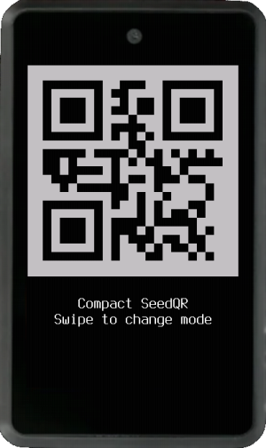
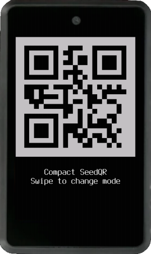
A QR code is created from a binary representation of mnemonic words. Format created by SeedSigner, more info here.
- SeedQR


Words are converted to their BIP39 numeric indexes, those numbers are then concatenated as a string and finally converted to a QR code. Format created by SeedSigner, more info here.
- Encrypted QR Code
This option converts the encrypted mnemonic into a QR code. Enter an encryption key and, optionally, a custom ID. When you scan this QR code through Load Mnemonic -> Via Camera -> QR Code, you will be prompted to enter the decryption key to load the mnemonic stored in it. Like any QR code, it can be printed if a thermal printer driver is set up.
Transcribing QR Codes
Please refer to Transcribing QR Codes for details on transcription modes and helper tools.
Encrypted¶


This feature allows you to back up your mnemonic by encrypting it and storing it on the device's flash memory, on an SD card, or in QR code format. You can customize the encryption method and parameters in the settings.
When using any of the encryption methods, you will be prompted to enter an encryption key. This key can be provided in text or QR code format. Additionally, you have the option to set a custom ID for easier management of your mnemonics. If a custom ID is not specified, the current loaded wallet fingerprint will be used.
Note: The stored encrypted mnemonic is protected only by the key you defined to encrypt it. Also, it is advisable not to rely solely on digital methods for backup. Read the considerations section on Krux Mnemonics Encryption.
- Store on Flash
This option stores the encrypted mnemonic in the device's flash memory. You can decrypt and load it later through the Load Mnemonic -> From Storage.
- Store on SD Card
If an SD card is available, this option stores the encrypted mnemonic on it. You can decrypt and load it later through the Load Mnemonic -> From Storage.
- Encrypted QR Code It's another path for the same functionality present on QR Code backups, described above.
Other Formats¶
- Words
 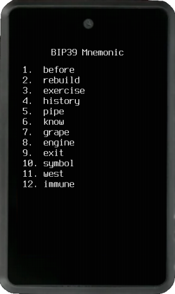
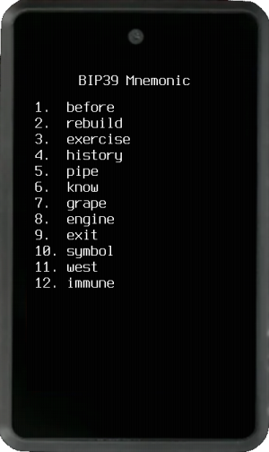
Display the BIP39 mnemonic words as text so you can write them down.
- Numbers


Display the BIP39 mnemonic word numbers (1-2048) in decimal, hex, or octal format.
- Stackbit 1248


This metal backup format represents the BIP39 mnemonic word's numbers (1-2048). Each of the four digits is converted to a sum of 1, 2, 4 or 8. This option does not print even if a printer driver is set.
- Tiny Seed


This metal backup format represents the BIP39 mnemonic word's numbers (1-2048) in binary format on a metal plate, where the 1's are marked (punched) and the 0's are left intact. You can also print your mnemonic in this format if a thermal printer driver is set.
Extended Public Key¶
A menu will be presented with options to display your master extended public key (xpub) as text and as a QR code. Depending on the script type or whether a single-sig or multisig wallet was loaded, the options shown will be xpub, ypub, zpub or Zpub. When displayed as text, the extended public key can be stored on an SD card if available. If you choose to export a QR code, you can not only scan it but also save it as an image on an SD card or print it if a thermal printer is attached.
 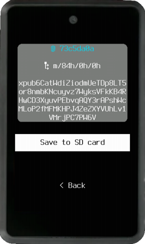
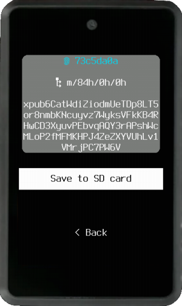


All QR codes will contain key origin information in key expressions. If your wallet coordinator cannot parse this information, it will not be able to import the wallet's fingerprint. As a result, Krux will not perform important verifications when signing PSBT transactions created by this wallet coordinator, unless you manually add the fingerprint in the coordinator.
Always prefer to import extended public keys directly from Krux when setting up a wallet coordinator instead of copying it (or parts of it) from other sources.
Some coordinators are phasing out support for variants like ypub and zpub in favor of xpubs that include key origin data. We therefore recommend using xpub only.
Wallet¶
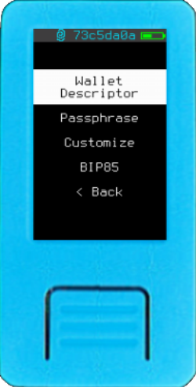

Here you can load, view and save Wallet Descriptor, you can also customize the wallet by setting a Passphrase or change other attribute using the Customize button. It is possible to derive BIP85 entropy for BIP39 Mnemonic and Base64 Password as well.
Wallet Descriptor¶
A Bitcoin Wallet Output Script Descriptor (aka wallet descriptors) encodes essential details such as:
- Script: Specifies the type of script (P2PKH, P2SH, P2WPKH, P2TR, ..). For miniscript, it outlines advanced spending policies and conditions.
- Origin Info: For each key, it includes the corresponding master fingerprint and derivation path that was used to derive it.
- Extended Public Keys: Contains one or more extended public keys (xpub, ypub, zpub, ..), each associated with its own origin information.
Output descriptors standardize wallet address generation, ensuring accurate wallet restoration from backups and compatibility across different apps.
For multisig and miniscript, loading a wallet descriptor is essential to verify addresses and PSBT validations. For single-sig wallets, it remains optional and serves as a redundancy check of the coordinator's wallet attributes.


When you select the Wallet Descriptor option for the first time, you will be prompted to load via QR code or SD card. After loading, a preview of the descriptor attributes will be displayed for confirmation. We shown each key’s fingerprint, derivation path, and abbreviated XPUB highlighted with a different color.
Miniscript Descriptors present an indented view of the miniscript after the keys. When Taproot is used, Krux checks if the internal key is "provably unspendable", meaning funds can only be moved via Tap tree scripts, in which case the internal key is displayed in a disabled color.


Re-access the "Wallet Descriptor" option after loading your wallet to view its name and a QR code containing the originally loaded data. If an SD card is inserted, you can save the descriptor for future use without a coordinator's assistance. Additionally, if a thermal printer is attached, you can print the QR code.
Krux also allows you to verify a descriptor's receive and change addresses without the need to load private keys. Simply turn on your Krux, access Tools -> Descriptor Addresses, and load a trusted descriptor from a QR code or SD card.
Please note that if you customize the wallet parameters or restart the device, the descriptor will be unloaded, and you may need to load it again to check addresses.
Passphrase¶


If you forgot to load a passphrase while loading your wallet, or if you use multiple passphrases with the same mnemonic, you can add, replace, or remove a passphrase here. Simply choose between typing or scanning it.
To remove a passphrase, select Type BIP39 Passphrase, leave the field blank, and press Go.
Don't forget to verify the resulting fingerprint in the status bar to ensure you've loaded the correct key.
Customize¶
 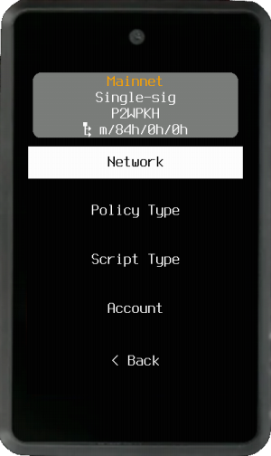
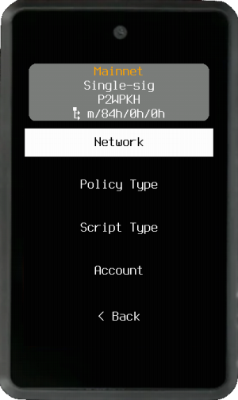
Here you are presented with the same customization options that you have when loading. You can change Network, Policy Type, Script Type, and Account. On loading a mnemonic page we already detail the wallet's attributes.
BIP85¶


Bitcoin BIP85 (aka Deterministic Entropy From BIP32 Keychains) allows for the generation of deterministic entropy using a BIP32 master key. This entropy can then be used to create various cryptographic keys and mnemonics (e.g., BIP39 seed phrases). BIP85 ensures that all derived keys and mnemonics are deterministic and reproducible, meaning they can be recreated from the same master key. This feature is useful for securely managing multiple child keys from a single master key without the need to store each one separately.
BIP39 Mnemonic
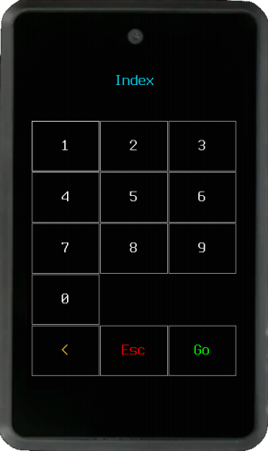


Choose between 12 or 24 words, then type the desired index to export a child mnemonic. After being presented with the new mnemonic, you can choose to load and use it right away.
Notice: Any passphrase from the parent mnemonic will be removed when loading a BIP85 child mnemonic.
Base64 Password
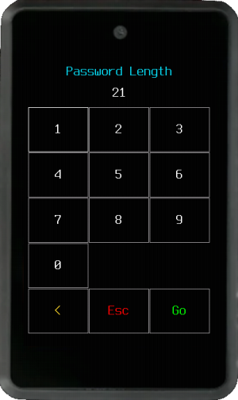


To create a Base64 password, which can be used in a variety of logins, from email to social media accounts, choose an index and then a length of at least 20 characters. The resulting password will be displayed on the screen and can also be exported to an SD Card or as a QR code.
Address¶
 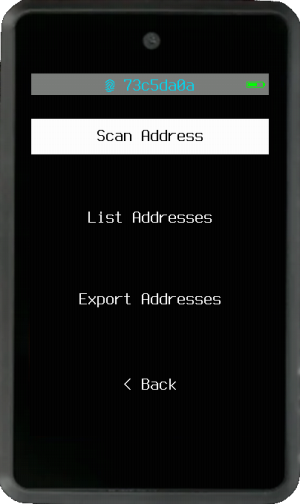
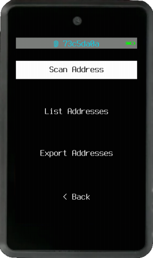
Scan, verify, export or print your wallet addresses.
Scan Address¶


This option turns on the camera and allows you to scan in a QR code of an address. Upon scanning, it will render its QR code back to the display along with the address below.
Tip: You could use this feature to scan the address of someone you want to send coins to and display the QR back to your wallet coordinator rather than copy-pasting an address. If you have a thermal printer attached, you can also print this QR code.
After this, you will be asked if you want to check that the address belongs to your wallet. If you confirm, it will exhaustively search through addresses derived from your wallet find a match. This is an extra security check to verify that the address generated by the wallet coordinator is authentic and belongs to your wallet.
Receive Addresses¶


List your wallet receiving addresses, you can select an arbitrary address to show your QR code and print if you want.
Change Addresses¶
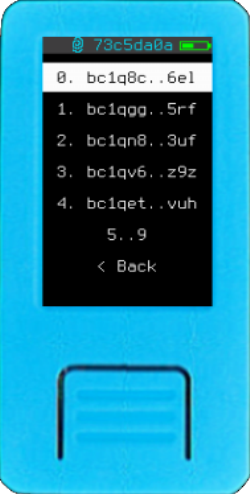 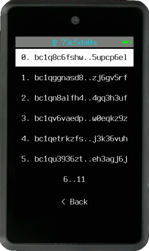
List your wallet change addresses, you can select an arbitrary address to show your QR code and print if you want.
Sign¶
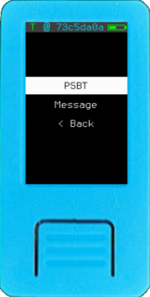

Here you can choose to sign a PSBT or a Message. You can load both PSBTs and messages by scanning QR codes or selecting a file from an SD card.
PSBT¶
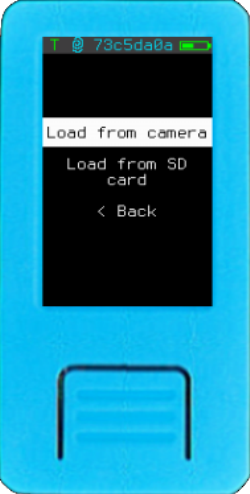

To sign a Bitcoin PSBT, you have the following options:
Load from camera: Use the camera to scan an animated QR code of a PSBT generated by your wallet coordinator software. If you have any issues, see Troubleshooting.Load from SD Card: Load a PSBT file from your SD card.


Upon loading the unsigned PSBT, you will be presented with a preview of the transaction, showing:
- How many Inputs (UTXO) are involved and the amount of BTC.
- How many Spend (addresses that don't belong to you wallet) and the amount of BTC.
- How many Self-transfer or Change (addresses that belong to your wallet) and the amount of BTC.
- How much Fee is being paid, the percentage relative to what is sent and an approximation in sat/vB (not available if
Policy Typeis Miniscript).
Amounts are displayed according to your locale and the International Bureau of Weights and Measures, while still adhering to the concept of the Satcomma standard format.
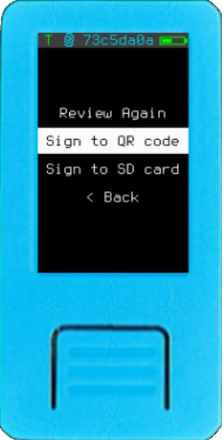 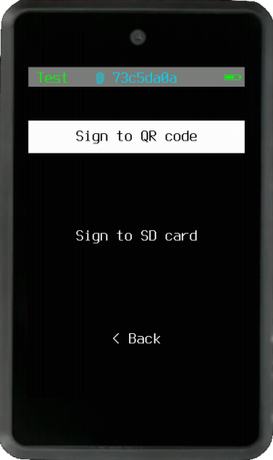
Then you can chose between two options of signing:
Sign to QR code: The signed PSBT will be shown as an animated QR code to be scanned back into your coordinator wallet.Sign to SD card: The signed PSBT file will be saved to your SD card to be loaded back into your coordinator wallet.
Tip: If a thermal printer is attached to your device, you can also print the PSBT QR codes for further processing.
Message¶
Similar to PSBTs, Krux can load, sign, and export signatures for messages. This feature allows you to attest not only to the ownership of the messages themselves but also to the ownership of Bitcoin addresses and the authorship of documents and files.
- Standard Messages and Files
 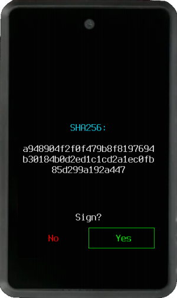
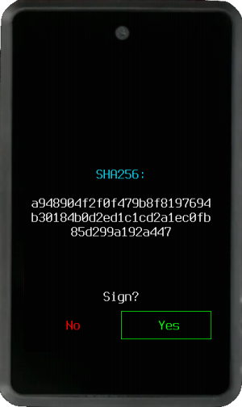
You can scan or load a file from an SD card, the content can be plaintext or the SHA-256 hash of a message. Upon loading, you will be shown a preview of the message's SHA-256 hash for confirmation before signing.
If you confirm, a signature will be generated, and you will see a base64-encoded version of it. You can then choose to export it as a QR code or save it to an SD card. If a thermal printer is attached, you can also print the QR code.
Following this, you will see and be allowed to export your raw (master) public key in hexadecimal form, which can be used by others to verify your signature. If a thermal printer is attached, you can also print this QR code.
This feature is used to sign Krux releases, airgapped, using a Krux device.
- Messages at Address
 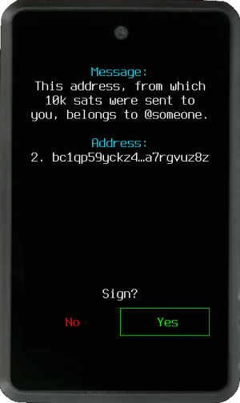
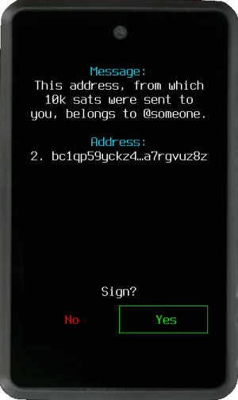
Coordinators like Sparrow and Specter offer the possibility to sign messages at a Bitcoin receive address, allowing you to attest ownership of that address. Krux will detect if the message is of this type and present a similar workflow for signing. The main difference is that the address will be displayed along with the raw message, and since the message is signed with a derived address instead of the master public key, Krux won't offer the option to export the raw public key after the signature.